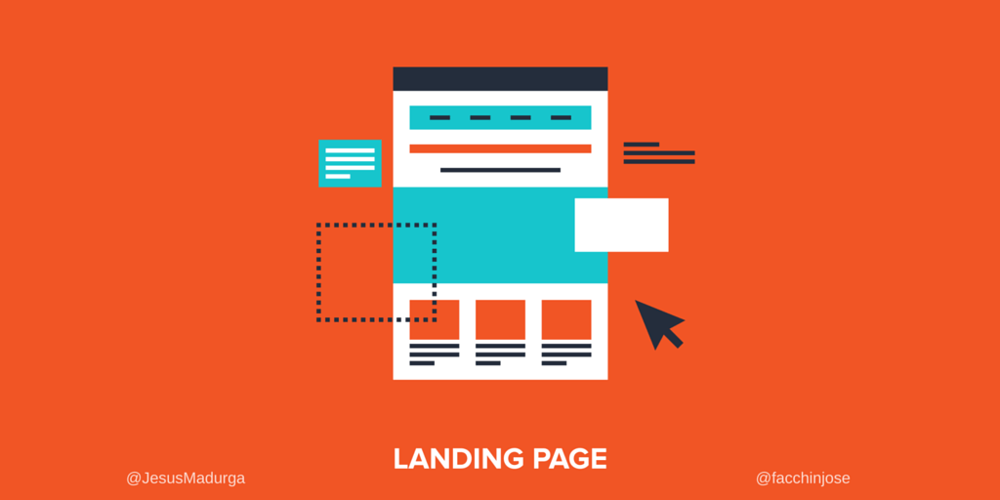

Es una página dentro de un sitio web, desarrollada con el único objetivo de convertir los visitantes en Leads o prospectos de ventas por medio de una oferta determinada. Generalmente tiene un diseño más sencillo con pocos enlaces e informaciones básicas sobre la oferta, además de un formulario para realizar la conversión,una de las razones por las cuales los visitantes no se convierten en clientes es porque no se está haciendo un buen uso de las landing pages (páginas de aterrizaje). Es por eso que en este post explicaremos en primer lugar qué son esas páginas de aterrizaje y por qué ellas pueden hacer una gran diferencia en los resultados obtenidos con Marketing Digital.
